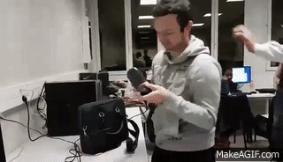

Caro's portfolio

5 ISS

5 ISS
This portfolio reflects my knowledge acquired during my course at the INSA and more precisely during my last year in the PTP Innovation Smart Systems. It is divided into ttwo main parts: a descriptive and technical part, and an analytical part. The first part introduces the different experiences during which I was able to acquire new skills. Finally, the last part sums up the different skills acquired.
SURNAME Name : MARTOCQ Caroline
Age : 22 ans
Mail : martocq@etud.insa-toulouse.fr
| Name | Organism | Year | Duration (number of hours) |
|---|---|---|---|
| Smart Devices | INSA | 5th year | 59.5 |
| Introduction to sensors | |||
| Optical sensors | |||
| Intelectual property in Open Source Hardware (Creative commons…) | |||
| Microcontrollers and Open-Source Hardware | |||
| Fabrication of gaz sensors | |||
| Communication | INSA | 5th year | 63.75 |
| Protocoles for IoT | |||
| Wireless digital communication for IoT | |||
| Energy for IoT | |||
| Security in IoT networks | |||
| Next generation networks | |||
| Middleware and service | INSA | 5th year | 62 |
| Service oriented services | |||
| Middleware for IoT | |||
| Cloud and autonomic computing | |||
| Analysis and data treatment | INSA | 5th | 37.5 |
| Software engineering | |||
| Semantics | |||
| Big Data | |||
| Innovative realisation | INSA | 5th year | 80.75 |
| SPOC/challenge/conferences | |||
| Project | |||
| Portfolio | |||
| >English | |||
| Innovation and humanity | INSA | 5ème année | 95.5 |
| Innovation / Social acceptability / Business development | |||
| Creativity methods | |||
| Team management | |||
| Sport | |||
| PPI |
The aim of this part is to describe the different experiences from my course in INSA, which allowed me to develop new skills linked to the PTP ISS.
| Date | Time | Context | Function(s) |
|---|---|---|---|
| from 13/10/16 to 27/01/17 | 3 months and a half | Integrating project | Embedded software |
| from 03/10/16 to 28/11/16 | 2 months | Microcontrollerss Open-Source Hardware (MOSH) - Fabrication of gaz sensors | Student |
| from 03/10/16 to 28/11/16 | 2 months | Personnal project, control of a LED garland | Developer |
| from 13/06/16 to 16/09/16 | 3 months | Technical internship in Myfox | Intern in RF measurement |
The integrating project of the 5th year ISS is the main project developed by a group of 4/5 students. With my group, we decided to develop our own idea: a system to no longer forget its belongings It is within this context that with 4 other students we created PickIT. The multidisciplinarity of the group (Telecom Network, Electronics and Physics) allowed us to develop a complete system based on our transversal skills. In a very general way, the PickIT system consists of placing RFID tags on its objects and creating lists of objects not to be forgotten in its Android application. A more detailed explanation will be given in the next part. During this project, we used an agile management method, Scrum, with the IceScrum software.
Three parts were drawn on this project: Arduino (SW and HW), Server and Android Application. It is therefore very naturally that we divided up the tasks by taking into account the desires of each one. I, for my part, wanted to devote myself to all the Arduino part and RFID reader. Indeed, I wanted to implement and deepen my skills in embedded software and Arduino. My work therefore consisted in the choice of the RFID technology to be used and its integration with an Arduino microcontroller, as well as with the means of bringing the information back to the server.
This project is part of the Smart Devices course of the 5th year ISS. The project was to develop an intelligent gas sensor. To achieve this, we have made a gas sensor in a clean room. We also created a shield for Arduino Uno so that it can interface.
Accompanied by my partner Coralie Naminzo, we made a shield for Arduino using the software LTSpice and Eagle. The first part consisted of establishing an analog measurement and amplification chain. In a second time we realized the routing of the shield on Eagle. A week at the AIME laboratory allowed us to manufacture the gas sensor that performs the measurements.
Personally, I wanted to apply the skills acquired during MOSH course but also to deepen them. That is why I decided to develop this project consisting of lighting a garland of LEDs with a Tweet from an Arduino Mega board and an Ethernet shield.
The material used for this project is :